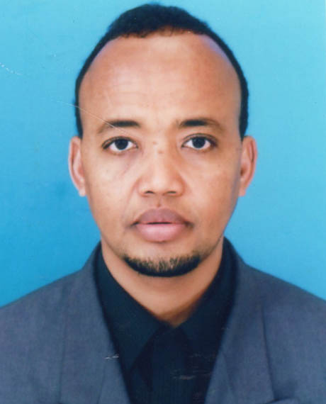

Staff Directory

Academic Qualifications
- Ph.D in Usul Addin & Comparative Religion - Doctor of Philosophy, International Islamic University Malaysia
- Master in Usul Addin & Comparative Religion - Masters Degree, International Islamic University Malaysia
- Bachelor in Usul Addin & Comparative Religion - Bachelor Degree, International Islamic University Malaysia
- Certificate in Teacher Training Certificate - Certificate, Mahad Imam al-shafiki
- Certificate in Memorizing the Holy Qur'an - Certificate, Jama'at Tahfiz al-qur'an
Abdurezak Abdulahi Hashi (Prof. Dr.)
Professor
IIUM Kuantan Campus
KULLIYYAH OF SCIENCE
hashi@iium.edu.my
5043
Expert Profile
Hashi, Abdurezak A. is currently a Professor in the Department of Biotechnology, Faculty of Science, International Islamic University Malaysia. His area of specialization is human sciences (theology and comparative religion), and bioethics, with more than 15 years of experience in teaching/lecturing, supervising postgraduate students and conducting academic research in related academic areas. He wrote a number of academic books, encyclopedia, refereed journal articles and academic conference papers, which are published in Australia, United States of America, Canada, Malaysia, Singapore, Turkey, Lebanon, India and elsewhere in the world. Since 2012, he has been a member of reviewers, Qatar National Research Fund, Foundation of Qatar, Doha Qatar. In 2014, he was awarded the Best Lecturer Award, while in 2022 and 2025, he was awarded Murabi Awards by the Faculty of Science. Apart from his academic duties, since 2014, he held different administrative positions in the university, i.e., deputy director and head, Centris, Office of the Campus Director, IIUM-Kuantan. He also served as an editor and editor-in-chief for one of the academic and refereed journals of the university. He is known for his active involvements in academic conferences and clinical workshops that are set to educate the students, staff and the members of the public, on the academic subjects that are multidisciplinary in nature.
Area of Specialisation
- Humanities ~ Humanities ~ Religious Studies ~ Comparative Religion - Comparative Theology, Islamic Thought, Epistemology and Philosophy
- Humanities ~ Humanities ~ Philosophy ~ Ethics - Moral philosophy, Professional and Administrative Ethics
Teaching Responsibilities
| BASIC PHILOSOPHY AND ISLAMIC WORLDVIEW | 2024/2025 2023/2024 2022/2023 2021/2022 2020/2021 |
| BIOMEDICAL ETHICS FROM ISLAMIC PERSPECTIVE | 2013/2014 |
| BIOTECHNOLOGY, LAW AND ETHICS | 2020/2021 2019/2020 2018/2019 2017/2018 2016/2017 2013/2014 2012/2013 2011/2012 |
| CARDIOVASCULAR, RESPIRATORY AND HAEMOPOIETIC SYSTEMS | 2021/2022 |
| CONCEPT OF HALAL AND HARAM IN FOOD AND BIOTECHNOLOGY | 2025/2026 2024/2025 2023/2024 2022/2023 2021/2022 2020/2021 |
| Creative Thinking And Problem Solving | 2023/2024 2020/2021 2019/2020 2018/2019 2017/2018 |
| ETHIC AND FIQH OF CONTEMPORARY ISSUES | 2019/2020 2018/2019 |
| ETHICS & LAW FOR HEALTH PROFESSIONALS | 2019/2020 2017/2018 |
| ETHICS AND LAW FOR HEALTH PROFESSIONALS | 2022/2023 2021/2022 2020/2021 |
| ETHICS, FIQH FOR EVERYDAY LIFE | 2018/2019 2017/2018 2016/2017 2015/2016 2014/2015 2012/2013 2011/2012 2010/2011 2009/2010 |
| FARDHU 'AIN | 2013/2014 |
| HALAL AND HARAM IN FOOD INGREDIENTS AND PROCESSING | 2018/2019 |
| HALAL AND HARAM IN FOOD PROCESSING | 2019/2020 2018/2019 2017/2018 |
| ISLAM AND SCIENCE | 2015/2016 2014/2015 |
| ISLAM,KNOWLEDGE AND CIVILIZATION | 2018/2019 2017/2018 2015/2016 2014/2015 2013/2014 2012/2013 2011/2012 2010/2011 2009/2010 2008/2009 2007/2008 |
| ISLAMIC INPUT FOR HEALTH PROFESSIONAL | 2019/2020 |
| ISLAMIC INPUT FOR HEALTH PROFESSIONAL (MHSC) | 2019/2020 2015/2016 2014/2015 |
| ISLAMIC INPUT IN PHARMACY | 2024/2025 2023/2024 2022/2023 |
| ISLAMIC WORLDVIEW | 2017/2018 2016/2017 2015/2016 2014/2015 2013/2014 2011/2012 2010/2011 2009/2010 2008/2009 |
| Islamisation of Human Knowledge in Medicine | 2021/2022 |
| KNOWLEDGE & CIVILIZATION IN ISLAM | 2024/2025 2023/2024 2022/2023 2021/2022 2020/2021 |
| MALAY VIRTUES,HERITAGE AND MALAYSIAN SOCIETY | 2020/2021 |
| NORMAL RESPONSE AND PROCESS TO DISEASED STATE | 2021/2022 |
| NORMAL STRUCTURE & FUNCTION OF THE HUMAN CELL, TISSUE & BODY SYSTEMS | 2021/2022 |
| PHARMACEUTICAL QUALITY ASSURANCE | 2009/2010 |
| PHILOSOPHY OF SCIENCES | 2013/2014 2012/2013 |
| REGULATION AND ETHICS IN BIOTECHNOLOGY | 2024/2025 2023/2024 2022/2023 2021/2022 2020/2021 2019/2020 |
| RESEARCH METHODOLOGY | 2017/2018 |
| STUDIES OF RELIGION | 2017/2018 |
| STUDY OF RELIGIONS | 2017/2018 |
| THE ALIMENTARY AND HEPATOBILIARY SYSTEMS | 2021/2022 |
| THE ENDOCRINE, REPRODUCTIVE AND URINARY SYSTEMS | 2021/2022 |
| THE ISLAMIC WORLD VIEW, KNOWLEDGE AND CIVILIZATION | 2021/2022 2020/2021 2019/2020 2018/2019 2017/2018 |
Supervision
|
Awareness, Practices And Experiences Of Ruminant Abattoir Operators In Malaysia On Minimising The Hazards Of Foodborne Pathogens And Ensuring Compliance With Halal Guidelines.
Ph.D
Completed
2022
Main Supervisor
|
|
Development Of Islamic Ethical Framework On Harm Prevention In Nursing Practices.
Ph.D
Completed
2018
Main Supervisor
|
|
Cartilage Tissue Engineering : Exploring The Potential Of Poly (Lactic-Co-Glycolic Acid) Based Scaffolds And The Bioethical Aspect From Islamic Perspective.
Ph.D
Completed
2016
Co-supervisor
|
|
Exploring Assisted Reproduction Technology: Biomedical And Shariah Insights Within The Islamic Ethico-Legal Framework
.
Ph.D
In Progress
Co-supervisor
|
|
Tissue Engineering Practices And Its Ethical Concerns: An Islamic Framework.
Master
Completed
2021
Main Supervisor
|
|
Protein Profiles, Antimicrobial, Activity Of Common Sunda Toad, Duttaphrymus Melanostictus Paratoid Secretions And Its Ethical Dimension On The Consumption Of Amphibians For Medical Purposes.
Master
Completed
2017
Co-supervisor
|
|
Bioaccumulation Of Hevy Metals In Some Important Freshwater Fishes Of Pahang, Malaysia.
Master
Completed
2014
Co-supervisor
|
|
Phototrophic Bacteria As Feed Supplement For Grouth And Survival Of Malaysian Masheer Fingerling, Tor Tambroides..
Master
Completed
2014
Co-supervisor
|
|
Validation Of Religiosity Scale Among Muslim Elderly Patients In Kuantan..
Master
In Progress
Co-supervisor
|
Research Projects
Completed
| 2021 - 2024 | Knowledge,Attitude, Behaviours Of Muslim Malaysian Mothers On Breastfeeding, Wet- Nursing,Milkinship And Human Milk Banking And Islamic Perspective (Fiqh And Shari?ah) In Pahang,Malaysia |
| 2021 - 2022 | Maqasid Al-Shari'ah guidelines on the conservation of the marine life |
| 2021 - 2023 | Expository Analysis from Islamic Views on Promoting Early Breast Cancer Screening among Muslim Women |
| 2016 - 2017 | Kajian Berkenaan Isu-Isu Etika dan Hukum Berkaitan Pengakhiran Hayat (End of Life) di Dalam Konteks Malaysia |
| 2016 - 2020 | A study on Ethical and Legal Issues in Tissue Engineering and Regenerative Medicine : A Step Towards Developing Comprehensive Ethico-legal Framework |
| 2015 - 2018 | Islamic Ethical Principle of Harm Prevention (Daf'U al-Darar) and its Applications in Nursing Practices |
| 2013 - 2015 | genesis of Scientific Thinking in Islamic Civilization :The Quest for Research culture |
| 2013 - 2017 | Osteoarthritis Initiative: Exploring The Potential of Non-Viral Gene Delivery Via Cartilage Tissue Engineering Strategy And The Bioethical Concern From The Islamic Perspective |
| 2013 - 2014 | Bioethics: An Islamic Perspective |
| 2012 - 2014 | Administrative Ethics of Public Administration from the Islamic Perspective |
| 2010 - 2011 | Inference and Probability in Methodology of Hadith |
| 2009 - 2012 | The Intellectual(science)legacy of the early muslim scientist:its contemporary relevance and significance |
| 2008 - 2010 | Scholarship of Comparative Religion: Its Concept, Objectives and Methods from an Islamic Perspective |
On-Going
| 2025 - Present | Effects of lifestyle interventions among staff with prediabetes at Sultan Ahmad Shah Medical Centre @IIUM |
| 2024 - Present | Contemporary Reproductive and Sexuality Issues from Islamic Maqasid-Based Approach |
| 2022 - Present | Fostering Connections Between Science and Theology for Medical Track Muslim Students |
| 2022 - Present | Introduction to Marine Science and Technology |
| 2021 - Present | MAQASID SHARIAH AND ITS APPLICATION IN MARINE POLICY |
Awards & Recognition
| 30 Nov, 2023 | 6 STAR MYRA ACHIEVERS FOR THE YEAR 2022 - KULLIYYAH OF SCIENCE, IIUM | KCDIO |
| 17 Jun, 2022 | MURABI AWARD - KULLIYYAH OF SCIENCE | KCDIO |
| 06 Jun, 2021 | BEST POSTER PRESENTATION AWARD, 3RD WORLD CONGRESS ON INTEGRATION & ISLAMICISATION 2021: a??MENTAL HEALTH AND WELL BEING IN THE 4TH INDUSTRIAL REVOLUTION, Held on on 4 th a?? 6th June, 2021. - International Islamic University Malaysia | University |
| 06 Dec, 2015 | Bronze Medal - Others | National |
| 19 Dec, 2014 | BEST TEACHER AWARD - KULLIYYAH OF SCIENCE, INTERNATIONAL ISLAMIC UNIVERSITY MALAYSIA, IIUM | KCDIO |
| 22 Feb, 2012 | SILVER MADLE, IIUM Research, Invention and Innovation Exhibition 2012 (IRIIE2012), International Islamic University Malaysia, Cultural Activity Center, IIUM, 21st-22nd, February, 2012 - International Islamic University Malaysia | University |
Publications
Articles
Conference or Workshop Items
Books
Book Sections
Monograph
| 2017 | Islamic ethical principle of harm prevention (Daf’u al-Darar) and its application in nursing practices. In: , |